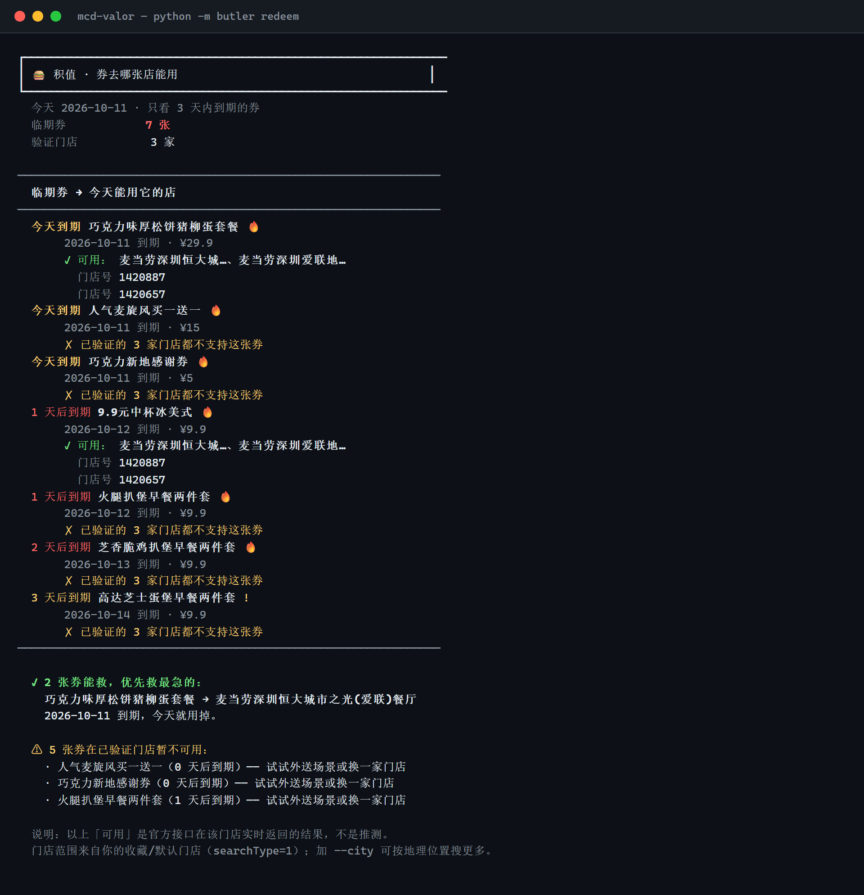
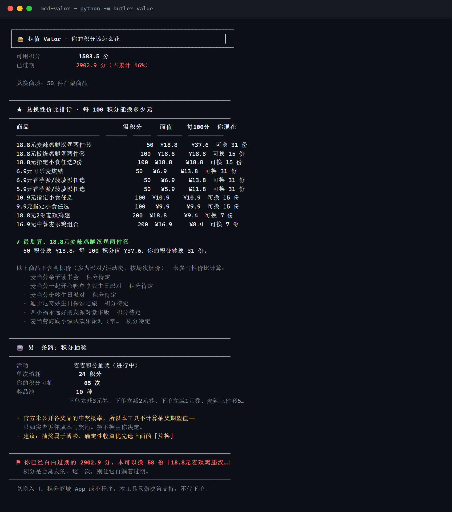

市面上的工具都在帮你「攒」。积值只关心一件事： 过期的资产该被抢救，而不是只被提醒。
累计 6345.4 分里 2902.9 分已过期（46%），而 App 显示「本月过期 0 分」—— 因为官方返回的是累计口径，不是本月。
3 天内到期的券里，能用的不到一半。 而大多数工具只会告诉你「有几张券要过期」，不告诉你今天该去哪张店。
它们躺在奖品列表里，不在卡包里——这是两个完全独立的数据源。 实测 19 个奖品中 3 个已失效，只查卡包的工具结构上发现不了。
下面每一个数字都是真实调用麦当劳 MCP 的返回结果，没有 Mock、没有手写美化。
query-my-coupons × query-nearby-stores × query-store-coupons
三个工具交叉，回答的正是最后一问：所以今天该去哪家店？

旧版对不可用的券建议「试试外送场景或换一家门店」——但它从来没查过外送。 这是建议一个未验证的出路，比不给建议更糟。
beCode 时会老实标「未核验」，不假装查过。
这是我们实测发现的最严重的一个问题。
榜首「50 积分换 ¥18.8」调接口返回
610403 商品已下架——它在推荐换不了的东西
三个字段全都不可靠：
· status 恒为 2
· downTime 派对类是未来日期
· 过滤 spuId 后 50 件里 19 件已下架
逐个调 mall-product-detail 核验，剔除后如实告知剔了几件。
最优汇率
¥37.6 → ¥13.8 /100 积分
降了 63%——之前的漂亮数字是被下架商品粉饰的。

我们用一个问题逐条审视 11 个命令：「如果没人投票、没人评分，你还会用它吗？」
累计 6345.4 − 可用 1583.5 − 已用 1595.0 = 3166.9，
但 expiredPoint = 2902.9，差 264 分，官方没解释。
我们把这个差额摆出来，不替官方猜它是什么。
query-lottery-info 的奖品列表里没有任何中奖概率字段。
概率未知时算期望值就是编造——所以只给成本与奖池，换不换由你决定。
上面两个问题函数返回值完全正常、14 项回归全绿。 它们需要真实接口 + 「这个结论对不对」的判断力。
我的账户什么都有，所以「什么都没有」这条路一开始也没走过 ——
而新用户第一天就是空账户。
tools/test_empty_account.py 把所有接口换成空返回，
黑盒验证 8 个命令：全部优雅降级，零未捕获异常。
输出还都带出路，不是干巴巴一句「无数据」：
「卡包是空的 → 去 claim 领券」。
两条路都只需要一个东西：免费 MCP Token（1 分钟申请）。不需要 build、不需要装包。
# 装成 WorkBuddy Skill（推荐）
curl -fsSL https://raw.githubusercontent.com/Lishoulan/mcd-valor/main/install.sh | bash
# Windows PowerShell
irm https://raw.githubusercontent.com/Lishoulan/mcd-valor/main/install.ps1 | iex
# 或者命令行（零第三方依赖，clone 即跑）
git clone https://github.com/Lishoulan/mcd-valor.git && cd mcd-valor
export MCD_MCP_TOKEN=你的Token # https://open.mcd.cn/mcp 申请
python -m butler redeem